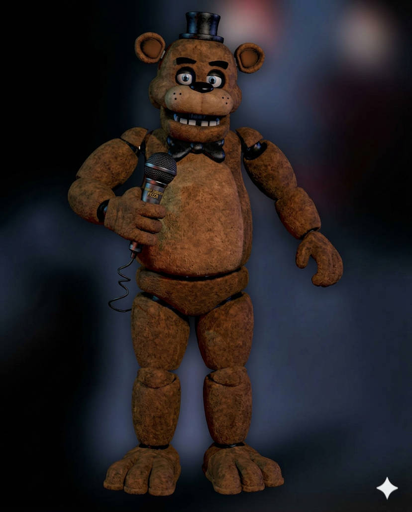
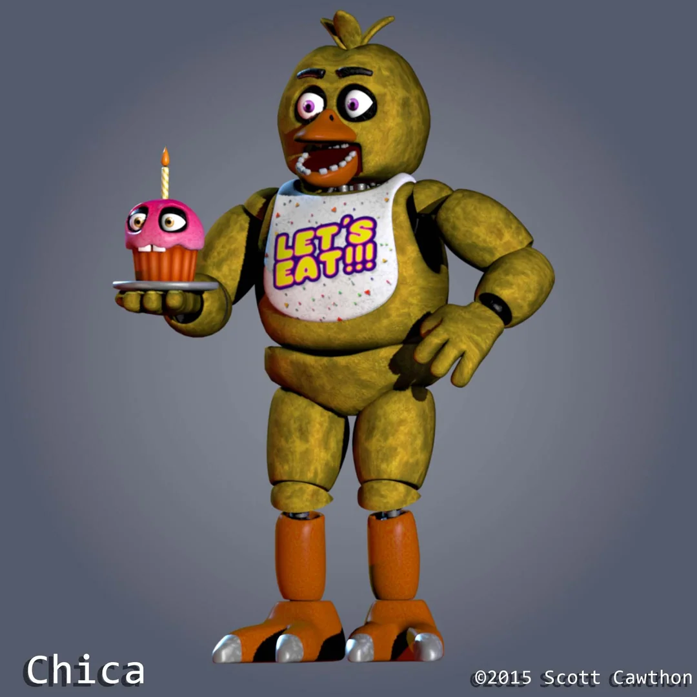
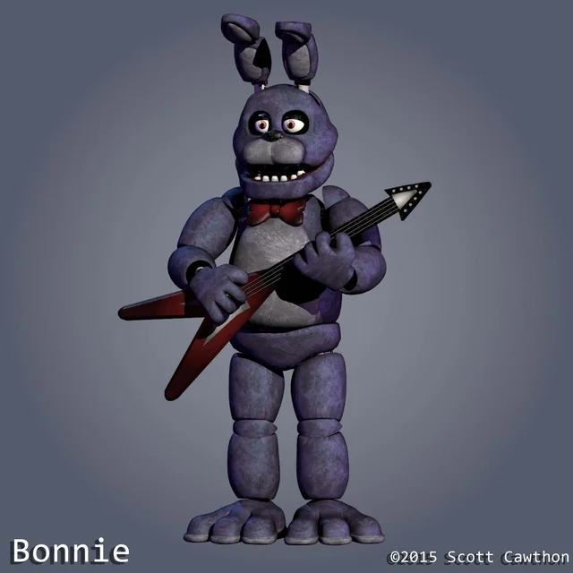
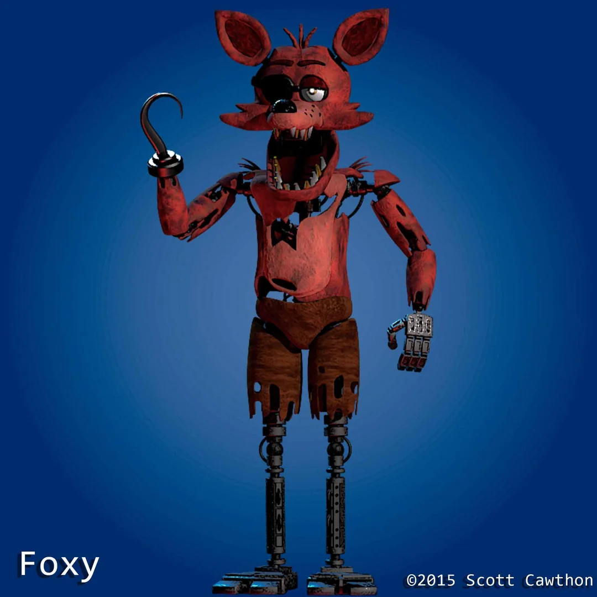

Conoce a los animatrónicos
Conoce a los personajes que forman parte de la experiencia temática de Freddy Fazbear's Pizza.

Freddy Fazbear
Es el animatrónico principal y la figura central de la pizzería. Representa a un oso que lidera la banda musical. Durante la noche, se vuelve impredecible y estratégico.

Chica
Es la animatrónica que aparece acompañada de un cupcake. Aunque parece amigable, su comportamiento nocturno resulta inquietante.

Bonnie
Es un conejo guitarrista que forma parte de la banda principal. Es uno de los animatrónicos más activos y suele moverse por el establecimiento.

Foxy
Es un zorro pirata que permanece en Pirate Cove. Se caracteriza por su rapidez y por atacar cuando tiene la oportunidad.